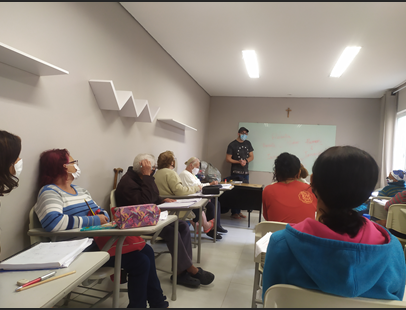
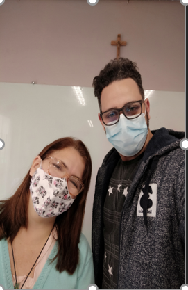

Construindo um Novo Horizonte para a Educação
Jardim Iporanga — São Paulo/SP
O Desafio
Promulgação e participação ativa no programa de inclusão ao acesso à educação para idosos não alfabetizados e reforço escolar para estudantes interessados.
Contexto e Relevância Social
O projeto visa oportunizar o acesso a toda a comunidade que carrega os reflexos claros da defasagem educacional acentuada pela pandemia e pelo baixo rendimento econômico. Focado no bairro do Jardim Iporanga e sediado na Paróquia Nossa Senhora das Dores e Santa Cruz, atuamos diretamente para fomentar e dar continuidade ao projeto MOVA SÃO PAULO, preservando e estimulando o investimento em Educação para reduzir o distanciamento social sofrido pelos mais vulneráveis.
Nossos Objetivos
- Promover a continuidade do projeto MOVA na região.
- Auxiliar diretamente com aulas de reforço escolar.
- Atuar com suporte pedagógico como professor auxiliar.
- Promover o acesso e incentivar a inclusão digital de idosos.
Público-Alvo
Idosos que não tiveram formação escolar em tempo oportuno, munícipes que desejam receber o letramento inicial ou estudantes em busca de reforço escolar.
Registro Fotográfico

Registro com a Professora Irma, responsável pelo projeto MOVA

Realizando a contribuição ao ministrar aula para os educandos
Como Desenvolvemos (Etapas)
- Divulgação e Informação: Conscientização da comunidade sobre as turmas disponíveis.
- Formação de Equipe: Integração de voluntários e professores auxiliares.
- Ementa Curricular: Desenvolvimento de conteúdo programático adaptado para nivelamento e diferentes ritmos de aprendizado.
Resultados Esperados & ODS Vinculadas
Espera-se uma maior adesão comunitária por meio de aulas, microcursos e palestras. O projeto está diretamente alinhado às diretrizes globais da ONU:
- ODS 3 (Saúde e Bem-Estar): Ofertar ocupação mental e suporte a famílias fragilizadas, auxiliando de forma indireta na prevenção e no bem-estar comunitário.
- ODS 4 (Educação de Qualidade): Eliminar disparidades e garantir igualdade de acesso à formação para os grupos mais vulneráveis.